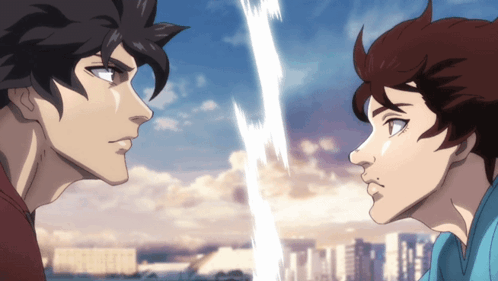

Home
Feature 1
Feature 2
Ohma Tokita
Also known as The Asura (阿ア修シュ羅ラ, Ashura), is a man who loves to fight. He entered into the Kengan Association, fighting for the Nogi Group. During the Kengan Annihilation Tournament, Ohma fought for Yamashita Trading Co. with Yamashita Kazuo as his employer.
< click to read more >
BAKI HANMA VS KENGAN ASHURA
The toughest fighters from “Baki Hanma” and “Kengan Ashura” clash in this unprecedented, hard-hitting martial arts crossover.

Watch Trailer
Watch on Netflix
Baki Hanma
He is known as the "Champion" (チャンピオン, Chanpion) of the Underground Arena in Tokyo Dome. In the fourth manga series, he is often called "the Strongest Boy on the Earth" (地上最強のガキ, Chijō Saikyō no Gaki).
< click to read more >